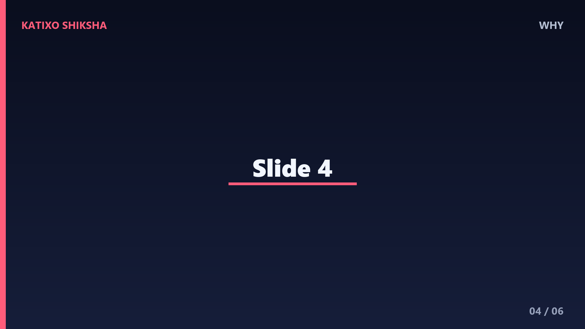
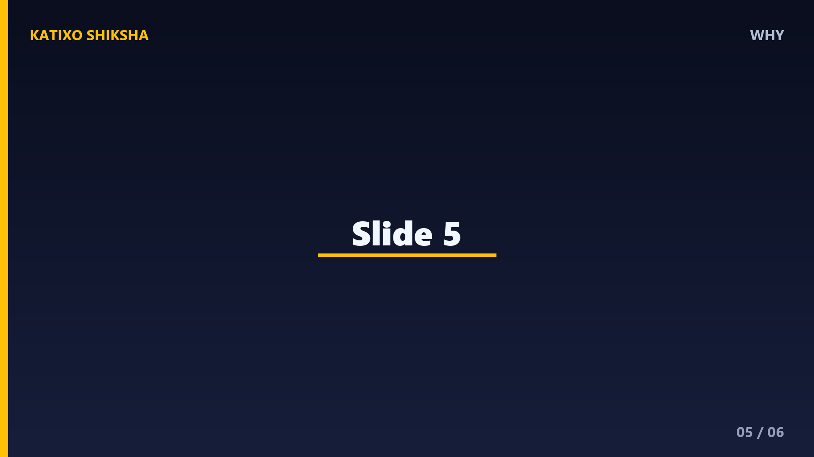

Ice ke Aage Ki Baat
Slide 1Kya aapne kabhi socha hai ki ice paani mein float karti hai? Kyunki hum sab jaante hain ki solid aam taur par paani ke niche hota hai, lekin ice nahin. Aaj hum is mystery ko solve karenge!
Slide 2Ice float karti hai kyunki uski density paani ki density se kam hoti hai. Toh kya hota hai? Aapko lagta hai ki ye galti ho sakti hai, lekin yeh sach hai! Ab hum dekhte hain ice ke particle kyun aise hote hain
Slide 3Ice ke particles, jo ki hydrogen aur oxygen ke atom hote hain, ek samay mein paani ke particle se kam jatil hota hai. Isliye, when ice in paani mein daalta hai, ve paani ke particle ke saath milkar block bante hain

Slide 4Yehi wajah hai ki ice float karti hai. Yadi iski density paani ki density se adhik hoti, toh ve pighal jate. Lekin yeh sach hai, aapko lagta hai!

Slide 5Is mystery ko solve karne ke liye humne kuchh ghatnaon ka pata lagaaya, jaise ki temperature aur pressure par ice ki density ka asar
Slide 6Toh aap jaante hain ab! Ice float karti hai kyunki uski density paani ki density se kam hoti hai. Dhanyavaad aapka samay dena. Agar aapko yeh jankari pasand aayi, toh zarur hamare channel ko subscribe karen aur ek naya video dekhne ke liye hamara bell icon press karein!